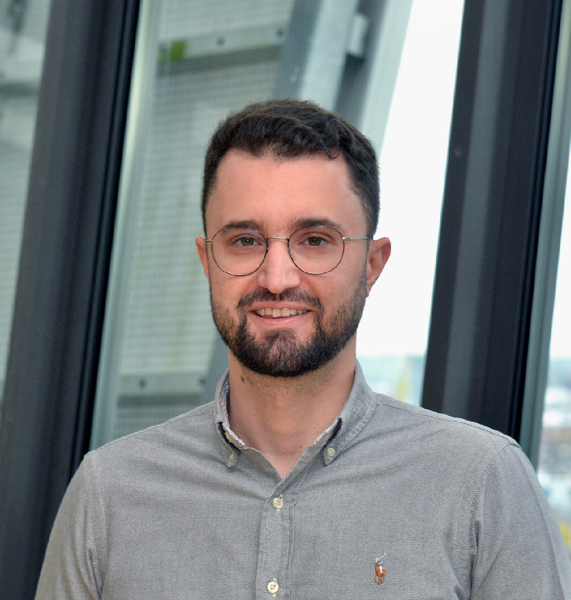

Christopher Morris
Professor
I am interested in both the theoretical aspects of graph learning—such as expressivity, generalization, and optimization—and its practical applications in combinatorial optimization and the sciences. Recently, I have gotten very interested in developing the theoretical foundation of data-driven algorithms with guarantees.